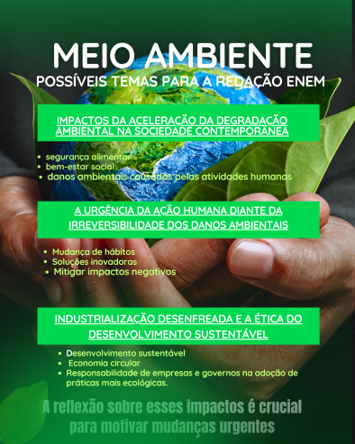

TEMA TRANSVERSAL: MEIO AMBIENTE
TCOMO PODE APARECER NA REDAÇÃO ENEM: A Urgência da Ação Climática e a Sustentabilidade Ambiental: Desafios e Caminhos para um Futuro Sustentável
Sugestão de argumentos
1. Argumento de autoridade
"ONU e Acordo de Paris: A Organização das Nações Unidas, por meio de acordos internacionais como o Acordo de Paris, sustenta que a ação climática imediata é indispensável para limitar o aumento da temperatura global a 1,5°C até o final do século."
2. Argumento histórico
"Desde a Revolução Industrial, a humanidade intensificou a exploração de recursos naturais e o uso de combustíveis fósseis, o que marcou o início da aceleração do impacto ambiental. Esse processo histórico mostra que o desenvolvimento econômico tradicional sempre esteve atrelado à degradação ambiental, o que exige, hoje, uma ruptura com esse modelo."
3. Argumento de exemplificação
"Enquanto países como a Alemanha e a Dinamarca avançam na produção de energia limpa e na gestão eficiente de resíduos, outras nações ainda mantêm altos níveis de emissão de carbono e políticas ambientais frágeis. Essa disparidade revela a necessidade de um esforço global, mas também de adaptações locais mais comprometidas."
4. Argumento de comparação
"Enquanto a Coreia do Sul investe muito na melhoria da educação, na formação dos professores e em novas formas de ensino, o Brasil ainda enfrenta problemas como salários baixos, escolas precárias e políticas ineficientes."
5. Argumento de raciocínio lógico
"O uso intensivo de combustíveis fósseis, o desmatamento e a poluição provocam desequilíbrios ecológicos severos. Como consequência, há perda de biodiversidade, elevação do nível do mar e ameaças à segurança alimentar. Sem intervenção imediata, esses efeitos tendem a se agravar, comprometendo o futuro das próximas gerações"